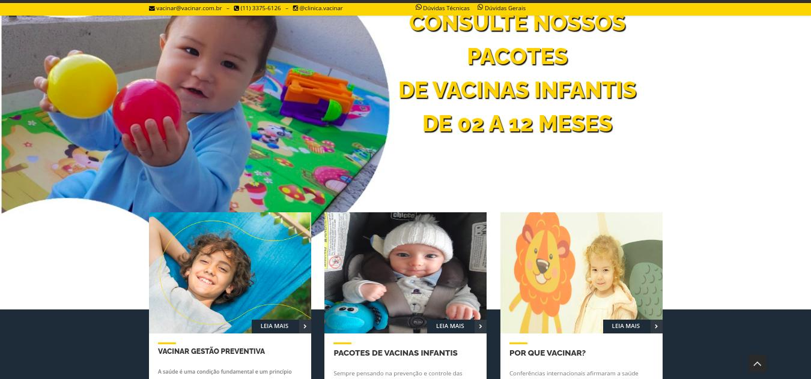
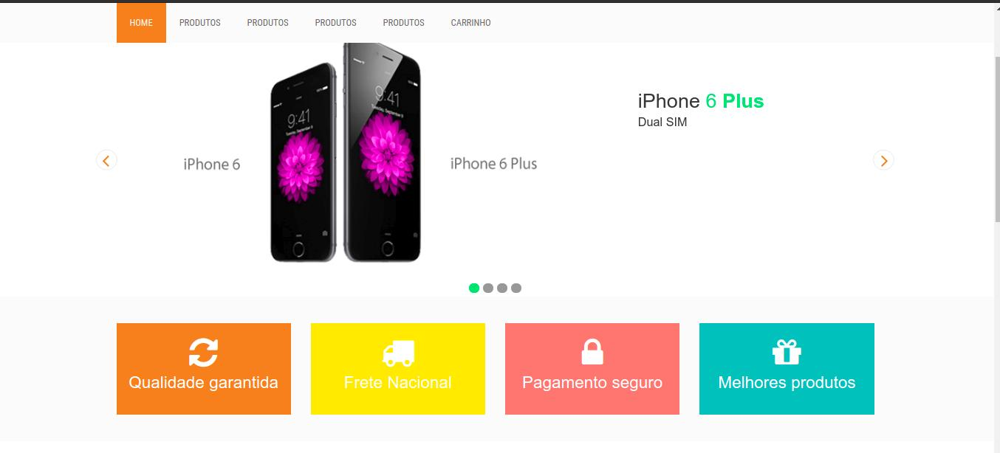
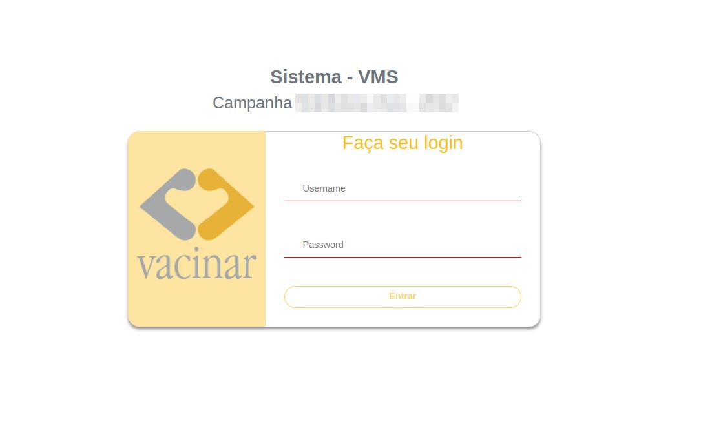

Grade de Ensino:
Conhecimentos e estudos adquiridos nesta graduação. Universidade Nove de Julho.
5º - SEMESTRE UNINOVE
Módulos Estudados
DESENVOLVIMENTO DE SISTEMAS MÓVEIS
DESENVOLVIMENTO DE SERVIÇOS WEB
PROGRAMAÇÃO DE PORTAIS CORPORATIVOS
PROGRAMAÇÃO PARA WEB EM AMBIENTE PROPRIETÁRIO
4º - SEMESTRE UNINOVE
Módulos Estudados
PROGRAMAÇÃO PARA WEB EM AMBIENTE LIVRE
RECURSOS DE APOIO À PROGRAMAÇÃO
PROGRAMAÇÃO DE COMÉRCIO ELETRÔNICO
SERVIDORES DE APLICAÇÃO
PROGRAMAÇÃO DE INTERFACES RESPONSIVAS
3º - SEMESTRE UNINOVE
Módulos Estudados
EPVA - INFORMÁTICA
DESENVOLVIMENTO DE INTERFACES ESTÁTICAS
INTERAÇÃO HUMANO COMPUTADOR
ARQUITETURA DE SOFTWARE
GESTÃO DE PROJETOS DE SOFTWARE
2º - SEMESTRE UNINOVE
Módulos Estudados
QUALIDADE DE SOFTWARE
ENGENHARIA DE SOFTWARE
ARQUITETURA DA INFORMAÇÃO
SISTEMAS DISTRIBUÍDOS
FERRAMENTAS DE GERENCIAMENTO DE CONTEÚDO
1º - SEMESTRE UNINOVE
Módulos Estudados
FERRAMENTAS DE TRATAMENTO DE IMAGENS E VÍDEOS
LÓGICA DE PROGRAMAÇÃO
MODELAGEM DE INTERFACES
DESENVOLVIMENTO DE INTERFACES DINÂMICAS
PROGRAMAÇÃO DE INTERFACES
O que são as TIC
Conceitos de ambiente virtual, comunidade virtual, internet.
Conceitos de SOFTWARE e HARDWARE
Evolução e tendencia das TIC
Uso de ferramentas da internet para pesquisa e importância da seleção e organização das Informações
LÓGICA DE PROGRAMAÇÃO
Módulos Estudados
Introdução - Representações
Tipos de Dados (Inteiro, Real, Literal, Lógico)
Variáveis
Expressões Aritméticas
Expressões Lógicas
Estrutura de Repetição
Estrutura de Condição
Variáveis Indexadas
Revisão - Sub-Algoritimo
Grade de Ensino:
Cursos de Desenvolvimento e Programação (EAD) Udemy.
PHP Completo
Módulos Estudados
Curso de PHP Completo
Projeto E-Commerce
Administração e Site
Estrutura de controle e laços de repetição, Arrays, Sessão, Funções, Date.
Banco de dados MYSQL
Banco de dados PDO
Banco de dados PDO
E-mail com PHPMailer
Segurança No PHP 7
ANGULAR 10
Módulos Estudados
Curso administrado com desenvolvimento de projetos
Primeiro Projeto - Olá Mundo
Segundo Projeto - Calculadora
Terceiro Projeto - Gerenciador de Tarefas
Quarto Projeto - Jogo da Velha
Quinto Projeto - Conversor de Moedas
Sexto Projeto - Dashboard
Primeiro Projeto - Unificação dos projetos
Clerison Oliveira
Nasci dia 01/04/1984. Casado e uma filha linda.
Desde pequeno tinha curiosidade sobre a tecnologia, e foi em meio a isso que veio o desejo de entender o funcionamento dos equipamentos e assim, fiz a inclusão da informática em meus estudos.
Minha primeira formação na área de tecnologia foi em 2001. Contudo foi passeando por vários setores. Como a tecnologia existem vários setores profissionais para se atuar, e em meio a diversos trabalhos migrei várias vezes pelos setores ao qual obtive a oportunidade, contudo buscando e estudando para exercer tais funções ao qual me trouxe um amplo conhecimento, ou seja, obtendo várias profissões na área tecnológica.
Conhecendo vários setores conquistei não só nos estudos, mas na experiencia profissional a vivencia como Analista de Suporte Técnico Pleno, e Analista e Desenvolvimento de Sistemas. Não desmerecendo as demais profissões que tenho, por que como um todo faz parte da minha grade curricular, ao qual também foram degraus para alcançar meus estudos e minhas metas.
Hoje com uma visão e conhecimentos mais amplos alcanço não só o entendimento do meu setor de atuação como também setores administrativos, ao qual necessitam de uma análise, sendo verificado o seu pleno funcionamento e eliminando redundâncias ou resistências no seu funcionamento. O qual tem a chance de evoluir e melhorar o seu desempenho, qualidade, e maturidade profissional, assim tornando uma empresa completamente preparada para um funcionamento robusto e evitando falhas ou erros que a maioria dos profissionais tem vivenciado, desde um funcionário de cargo inicial ao CEO da empresa.
Força Foco e
Se almeja alcançar algo, é ficando de pé e continuando a caminhar.
Profissionalismo
Não é o que você faz, e sim como você faz a sua PROFISSÃO. 🤨
Qualidade de vida
Desfrutar daquilo que você buscou e conquistou. Viver!!!
Se nada der certo hoje
Amanhã eu levanto mais cedo e tento de novo!
PROJETOS
Tecnologia da informação é o caminho ao qual a evolução vem surfando!
Ela vem brincando em meio as ondas do conhecimento, porem se não cair no percurso de sua rota... E mergulhar durante a queda nunca vai entender o que há por debaixo das ondas.
Clerison Oliveira da Silva.

Meu perfil Curricular é o caminho para alcançar meus estudos e objetivos.
Analista Desenvolvimento Junior:
( MYSQL – PHP – ANGULAR – CSS – HTML – Bootstrap - GIT - DOCKER )
Atuação nas tarefas de manutenção dos sistemas administrativos e clientes, participação ativa nos projetos de desenvolvimento dos sistemas administrativos, clientes e documentação. Sistemas desenvolvidos = Sistema Administrativo, Acesso Clientes Administrativos, Adesão de Clientes, Sistema de Aplicação VMS.
2022 - Vacinar Clinica de Imunização
Não só uma empresa onde atender todo nosso pais, mas uma empresa com um ambiente familiar e acolhedor, trouxe desafios para equipe de desenvolvimento, onde seu intuito é aprimorar cada vez mais os sistemas para atender com qualidade e desempenho todos os clientes e proporcionando uma ótima experiencia em seus serviços.
Analista Desenvolvimento Junior:
( MYSQL – PHP – HTML - CSS - GIT - DOCKER )
Freelance - Atuação em tarefas no desenvolvimento no back-end e front-end, sistema administrativo de cadastros e gerenciamentos.
2020 - ENGEFOGO – Soluções Contra Incêndios
Freelance ao qual estava auxiliando no desenvolvimento do sistema administrativo, onde o mesmo abordava toda a administração e estoque dos produtos, peças e equipamentos utilizados pela empresa e clientes.
Analista Desenvolvimento Junior:
( ANGULAR - HTML - CSS - GIT - DOCKER )
Freelance - Participação de tarefas no desenvolvimento do front-end.
2020 - PROFISSIONAIS - SA – Palestras
Freelance ao qual estava auxiliando no desenvolvimento front-end, tarefas de criação dos componentes usados no site, apresentação de conteúdos, aplicação do projeto seguindo de acordo com o desenvolvimentos do web designer.
Analista Suporte Técnico Pleno:
Coordenação de analistas TI em filiais (OBRAS) gerenciamento switches Cisco, telefonia IP, Access Point, servidores, acompanhamento de chamado e recursos de rede, atendimento direto e indireto aos colaboradores da empresa, Desktop, Notebook, Celulares, Tablet, Ipad, Iphone, Impressoras, rotina de Backup, Aplicativos diversos, Atualização de sistemas, help-desk, acesso remoto, desenvolvimento de tutoriais, gerenciamento SLA – em conjunto com provedores e terceiros. Gerenciamento de infraestrutura em filiais (Escritórios), negociação e análise de contratos, controle de equipamentos e patrimônio.
2017 - Contern Construção e Comercio LTDA
Sem duvidas está e uma das empresas que mais trouxe crescimento para minha vida profissional, rebaixei o meu currículo para participar do processo seletivo e entrei na empresa como Auxiliar de informática, no decorrer de 2012 a 2017. Quando fui dispensado da mesma já estava na gestão tecnológica da empresa e seus recursos em obras e projetos aplicados para o seu desenvolvimento tecnológico. Exigiu muito dos meus conhecimentos, onde investi em vários cursos na área de infraestrutura e conhecimentos aplicados por todos setores administrativos.
IRLA - Instalador e Reparador de Linhas e Aparelhos:
Atuando na Infraestrutura de redes de telefonia. Atendimento direto e indireto ao cliente, buscando soluções e possíveis reparos de manutenção preventiva.
Executando ordens de Instalação, Reparos ou Chamados de urgência com ordens da ANATEL.
2012 - ICOMON Tecnologia LTDA.
Empresa que competiu usar meus conhecimentos tecnológicos em redes, e aplicando seus conceitos na área de telefonia, possui ótimas experiencias em atendimentos aos clientes. Atuando no dia a dia aprendi os conceitos e aplicações da infraestrutura da operadora de telefonia e internet em varias cidades por onde atuei como técnico em telefonia.
Analista Suporte Técnico Junior:
Atendimento direto e indireto ao cliente, buscando soluções e possíveis reparos de manutenção preventiva.
Atuando nas areas de Manutenção e atendimento de chamados, pessoas físicas e empresas, orçamentos e auxiliando no atendimento balcão.
2008 - Puma Hard & Soft
Projeto de futuro montado enquanto eu estudava tecnologia, juntamente com um amigo seguimos uma sociedade buscando o nosso desenvolvimento profissional e pessoal. Está loja demostrou o quanto eu estava disposto e capacitado para enfrentar o mercado e suas dificuldades, atendimento a clientes físicos e empresas, trouxe não só um fortalecimento profissional e também por sua vez um ótimo crescimento pessoal. Investimentos e administração da mesma.
A primeira decepção e uma bruta situação que veio sobre esta empresa foi devido ao furto ocorrido em uma madrugada, onde perdi tudo que havíamos conquistado materialmente. Infelizmente veio a falência da empresa e suas consequências devido as perdas nossas e de clientes. E finalizando nossa sociedade nesta empresa. Contudo através de anos de trabalho venci utilizando os conhecimentos adquiridos e apoios de amigos e familiares
Atendimento e manutenção:
Tarefas diárias de atendimento ao cliente, efetuando manutenção e instalação dos jogos solicitados pelos clientes, auxiliando em duvidas e usabilidade dos usuários.
2005 - Cyber sapo D´Jow
Hoje em dia só os lendários lembram de utilizar Cyber Café, Lan House e etc..., participei de uma sociedade com um amigo onde usufruíamos de um espaço em uma empresa para disponibilizar equipamentos para clientes utilizar internet, Office e games.
Foi uma ótima experiencia com clientes e aprendendo juntamente com os mesmos com as dúvidas e dificuldades que aparecia no dia a dia, tanto na área tecnológica como auxílio aos usuários.
Analista Suporte Técnico:
Atendimento ao cliente, tarefas efetuadas no atendimento de chamados de pessoas físicas e empresas, manutenção e auxilio ao usuário.
2003 - SAO Informática LTDA.
Primeira experiencia atuando como técnico em informática, aprendendo e crescendo profissionalmente, atendimento de chamados a clientes e empresas. Usufruindo dos meios que tinha na época para executar as tarefas diárias com meus estudos e trabalho.